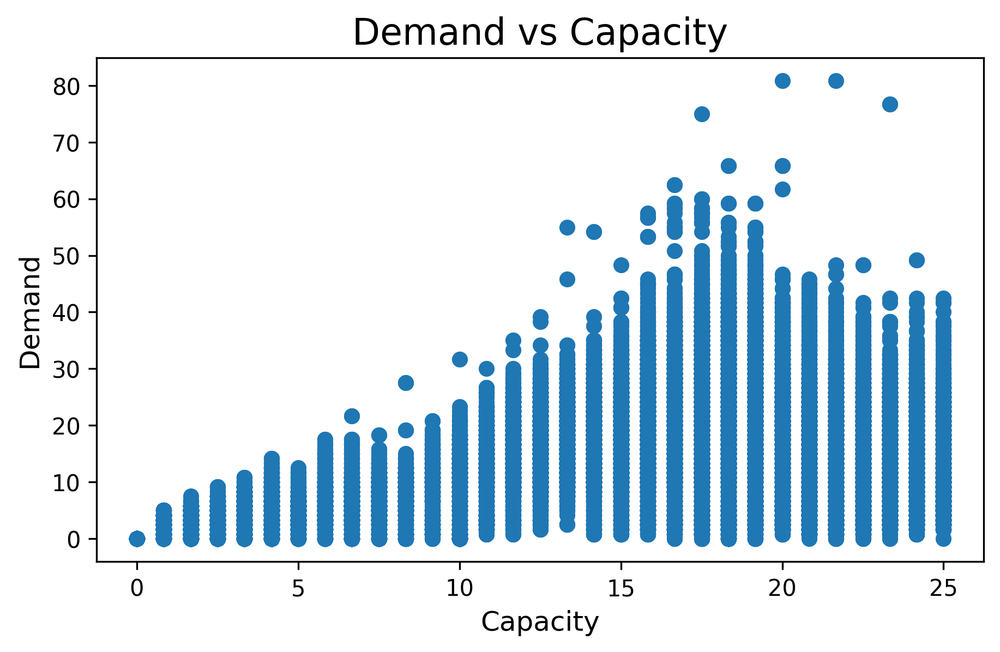

Sections
Introduction
 Source: https://www.newscientist.com/article/2398994-fastest-ever-semiconductor-could-massively-speed-up-computer-chips/
Source: https://www.newscientist.com/article/2398994-fastest-ever-semiconductor-could-massively-speed-up-computer-chips/
Chips are key components of many applications and tools, from mobile phones to self-driving cars. Chip design involves defining the product requirements for a chip’s architecture and system, as well as the physical layout of the chip’s individual circuits, a task which is becoming increasingly challenging as these technologies continue to develop. Rising complexity is pushing the limits of existing chip design techniques, and machine learning offers a possible avenue to new progress. One specific area where chip designers face problems is predicting demand; often there are certain areas in a chip through which large amounts of information must pass, creating bottlenecks and reducing efficiency. Although electronic design automation tools have been useful to ensure scalability, reliability and time to market, our group aims to improve the process by exploring new machine learning techniques.
Given the relatively unexplored domain of machine learning for chip design, many recent attempts have tried to apply tools from different fields, which may not perfectly fit this specific use-case. For example, chip circuits are often represented as graphs in machine learning, and researchers must choose a specific kind of graph and the features within the graph. Our project aims to identify possible shortcomings in current chip representations and suggest possible improvements, which will allow for deeper and more accurate research in the future.
Exploration
Data
We used 12 Superblue circuits from (Viswanathan et al., 2011, 2012). These circuits were used in the original DE-HNN paper, and will be used to remain consistent with our baseline model. Each netlist ranges from 400,000 to 1,300,000 nodes and is extremely complex.
What is a netlist?
A netlist is a representation of electronic circuits where we represent connections between instances and nets. Instances contain the logic of the circuits and nets are the connections between them. They can be represented as a bipartite graph with both instances and nets being nodes, for better message passing in the GNN.

Baseline Model
We extended research into the DE-HNN (Directional Equivariant Hypergraph Neural Network) model architecture, a framework for learning circuit properties from netlist graphs. The DE-HNN model implemented by Luo et al. is as a message-passing neural network on a directed hypergraph. Importantly, it makes use of injected virtual nodes that simplify the graph structure by forcefully adding connections between topologically nearby nodes. The Superblue dataset depicts the logic gates (nodes) and the wires connecting them (edges), which intuitively leads to a graph representation. Luo et al. represent the designs as hypergraphs, where nodes correspond to circuit cells (logic gates or blocks), and nets are modeled as hyperedges that connect one driver cell to multiple sink cells.
Our work was benchmarked against, and later built upon, a two layer DE-HNN model, with a node dimension of 16 in each layer, and virtual nodes. This baseline model had validation and test RMSE converging at around 6.
Exploratory Data Analysis
Visualizing routing congestion is a key early step in the physical design process. We started by creating a heatmap of congestion across the chip to illustrate where the design is over-stressed. The darker areas in Figure 1 indicate regions where the number of required routing tracks exceed availability. In practice, these maps can highlight issues such as too many cells being bunched near a macro pin or a channel, with multiple long nets running through, and is also relevant in machine learning contexts when considering the importance of identifying repeating graph substructures.

Demand is the amount of routing resources that need to pass through a GRC, and is a target variable in our congestion prediction tasks. We visualized the routing demand distribution – the number of routing tracks necessary in each region of the chip — with a histogram (Figure 2). In the Superblue 18 circuit, demand seems to be bimodal with most demand concentrated around 3 and 17. This particular chip’s demand histogram is also narrow and somewhat centered at one of the peaks, which indicates the routing load is relatively balanced across the chip. In contrast, demand distributions on other chips followed a wide or skewed distribution with significant outliers, which indicates uneven routing resource usage or poor design.

These analyses reveal how routing resources are utilized across the design, identifying patterns and outliers. Most of the Superblue chips have a small fraction of regions with sizable demand; these regions have disproportionately large routing load, which makes them an important target for future machine learning models.
Explanation
Interpreting the GNN’s predictions is difficult. What features are driving the model’s demand prediction?
Ablation Study
First we wanted to determine the relative feature importances of each feature in the model in order to better understand how the DE-HNN model is making predictions and include some explainability in the process. One way we attempted this is by training a model with one feature removed at a time using both the DE-HNN and a Random Forest in order to see how much the loss increased, then ranking the features by their impact on the model.
The features that we work with are
- Cell type - the type of logic gate that the instance is
- Width and height - physical dimensions of the cell
- Orientation - based on the rotation of the cell
- Degree - The number of nets a cell is a part of
- Eigenvectors - Spatial embeddings that reveal clusters in the graph
- Degree Distribution - A local view of the graph, counting the number of neighbors at increasing distances
- Persistence Diagram - A summary of topological features encoding growing neighborhood around a node
From the results of this ablation study, we can see that the most important features are the eigenvectors, degree distribution, and persistence diagram. Since these are all the topological features that relate to graph structure it makes sense that the connections themselves may be more important than the cell features. If we remove all of the topological features at once, the performance worsens by 74.4% further showing that the graph structure is crucial to predicting congestion.
SHAP Analysis
Another way to quantify feature importances is with SHAP, or SHapley Additive exPlanations. SHAP is a game-theory based method for explaining a machine learning model’s predictions by calculating the impact of each feature in every prediction, and provides both a magnitude and direction for a feature’s effect.
We ran the SHAP algorithm on a LightGBM model using the same train/test split as in the baseline, and generated the feature importances for both the node and net level predictions. Figure (ADD FIG NUM) shows the resulting summary plot for the node features, where the colors of each dot represent their value for an individual datapoint, and their position on the axis represents their impact on the model output.

This SHAP plot for the node predictions supports the findings from the previous ablation study; the eight most impactful features are eigenvectors, and all ten eigenvectors are within the top twelve out of the 45 total features. It is also interesting to note that despite the eigenvectors being previously generated with a specific ranking in terms of information captured, the top eigenvectors are not necessarily the most impactful. We are unable to perform significant analysis on the directionality of each feature’s impact, as the eigenvectors are simply embeddings of the graph structure, but knowledge of the eigenvectors’ relative importance can help guide future experiments.
Experimentation
Following our initial EDA and attempts at drawing insight on the baseline model through explainable AI methods, we constructed a set of informed experiments to tackle key issues with the baseline model: a long runtime, a lack of generalizability, and limited learning on the node and net features.
LightGBM
As previously mentioned, we noticed that the baseline DE-HNN model was not learning from the node and net features, and was instead only making predictions based on the structure of the graph, formed by the millions of connections in the training dataset. From our earlier analysis, however, we knew that there is some value in the features, and they can also serve as a representation of the greater graph structure, such as through the eigenvectors. This led us to considering tree-based models as an alternative architecture for the net demand prediction task.
Hypothesis
These models would only have the net features as a dataset (eigenvectors and degree), but we hypothesized that they would reduce training time due to a tabular data structure rather than a dense graph.
Finding
We experimented with two tree-based modeling architectures, LightGBM and Random Forest. For each model, we ran a grid search to optimize for Validation RMSE + Test RMSE, to settle on the final hyperparameters used to generate the results in table (ADD TABLE NUMBER).
Overall, these new approaches did not have as much success as the baseline DE-HNN model, likely because there is importance in the connections between nodes that simply isn’t captured by the feature set. However, the tree-models trained significantly faster, with the LightGBM model training nearly 100x faster than the baseline DE-HNN, and the Random Forest model about 4x faster (but with slightly less loss in performance). This suggests that there may be some value in further exploring this approach, especially with further optimizations or feature enhancements.
Feature Engineering (Adding Capacity)
Although the DE-HNN does well at capturing the graph structure, it doesn’t learn much from the node and net features. Therefore, we wanted to try adding a new feature called capacity into the model to see if it could perform better. Capacity is a rough estimate of the amount of resources available for placing cells and routing wires in a given area. We believe that the DE-HNN model can learn the interactions between capacity and dense topology, to learn that areas with low capacity but a large cluster of cells tend to be more congested. We hypothesize that the DE-HNN model will improve its performance compared to the baseline, because of this new feature.
Hypothesis
We also hypothesize that the LightGBM will improve as capacity is positively correlated with demand with an r^2 value of 0.33.

Finding

Adding capacity only improved the performance of the DE-HNN model by 0.6%, showing that it did not have much of an impact on the model. We believe that this result follows our previous finding that the DE-HNN only learns from the graph structure and not the features. Since high capacity areas can be correlated with densely connected areas in the graph with a lot of cells nearby, the DE-HNN could be estimating capacity by itself without needing an explicit feature for it.
However we see an improvement of 41.6% in the LightGBM model after we add capacity. Since a tree model has no way to model the graph structure, it needs to be given features like capacity explicitly as it relates to the graph. Capacity is more correlated with demand than other features, making the tree model’s performance almost comparable to the DE-HNN. Although the loss is 24% worse, the training time is almost 100 times faster, giving a great tradeoff of accuracy for speed.
Partitioning
Chip designs translate to noisy, gigantic graphs, and it may be difficult for the model to identify and understand common structures. Through some intuition, and inspiration from a method utilized in the DE-HNN model, we believed that reducing the physical size of the problem would improve the model’s performance.
Extra Details
In the DE-HNN model, virtual nodes are inserted into the graph to connect nodes within a given partition. This partition is identified using the METIS algorithm. METIS is well-regarded for its efficiency in handling large-scale graphs and its ability to produce balanced partitions while minimizing inter-partition edge cuts. There are two key parameters considered when initializing METIS: `nparts` and `ufactor`. The former is self-explanatory - it is the number of partitions the input graph should be divided into. The latter controls the permissible imbalance between partition sizes. A low ufactor enforces balance, but might hide natural variations in structure; a higher ufactor might let natural clusters emerge even if they are of unequal sizes. While the DE-HNN model prioritized balanced partitions, our intuition regarding chip design suggested a higher ufactor may reveal clusters of nodes representing real, cohesive units within the chip.
In our experiments, we varied the ufactor from 0 to 900 in steps of 100, and the number of partitions was varied from 10 to 100 in steps of 10. This systematic parameter sweep allowed us to evaluate partition quality across a broad spectrum of configurations. The quality of a given partitioning is evaluated through the conductance metrics. The results of our parameter sweep are depicted in Figure X. Based on our evaluations, a setting of ufactor = 600 and 10 partitions was identified as optimal for the full graph.
Recognizing that the global partitioning might obscure local substructures, we implemented a hierarchical refinement strategy, dubbed ‘Subpartitioning’. Following the initial partitioning, each of the 10 partitions was treated as an independent subgraph. For each subgraph, we reapplied the same heatmap-based parameter sweep and assessed local partition quality. The same parameter settings that were optimal for the global graph were identified as optimal for the subgraphs. This multi-level approach allowed us to capture nested modular structures that are characteristic of chip designs. This strategy resulted in 1000 “new” graphs, potentially representing functionally cohesive blocks within the chip. To mimic the original set of node and net features, we recompute the degree and Laplacian eigenvector for each node and net. Though the training set has increased 100-fold, each graph is, on average, 1/100th the size of the original graph. This will dramatically cut the computational resources required to train the model. Further, we hypothesized that this strategy would allow the model to better understand the common substructures present across different designs, aiding the models generalizability on unseen designs.
Hypothesis
Chip designs likely share certain substructures, which better encapsulate local dependencies causing congestion.
Finding

Subpartitioning noticeably improves performance, while significantly reducing training time and required memory. In initial experiments, we observed that the loss plots were highly erratic. Clearly, because of increasing the number of training samples, the model was giving too much weight to each sample, and appeared not to converge. Reducing the learning rate by a factor of 100 allowed the model to converge incredibly quickly. In fact, in figure X, we see the model achieve a lower test loss than the baseline model. These results suggest that reducing the problem was a viable strategy and allowed the GNN to better capture local dependencies. We believe the model learned to identify smaller common networks in the chip, aided by, importantly, training on smaller, cohesive graphs.
Downsampling
In our EDA, we noticed that the demand variable is bimodal, with a smaller peak between 0 and 5 and a much larger peak between 15 and 20. In conducting an error analysis on the baseline model, we noticed that it generally did well at predicting values around the larger peak, but failed to recognize the second common range of values.
To try and create a more representative model that is able to derive learnings relevant to the full dataset, we decided to implement downsampling (or undersampling) - a process in which the training data is binned by the target variable, and each bin is randomly sampled to ensure equal sizes. This ensures that the dataset is balanced across the full range of the target variable, and will ideally allow us to improve the model’s performance.
Extra Details
Choosing the number of bings and the bounds of each bin was an important task, as these outputs could significantly alter the final model’s predictions. To choose the bins, we defined multiple different bin counts/ranges, and performed a search on the final dataset size, with the intention of ensuring a balanced dataset, while minimizing the amount of data removed.
Because our dataset is a graph, we also had to ensure that the edges also matched the new, smaller dataset. This involved an iteration through all the nodes and edges to ensure that we didn’t lose any edges that needed to remain in the smaller dataset, while also retaining as much of the graph as possible. From this downsampling process, we hypothesized that we would be able to improve test and validation accuracy, while preventing overfitting. We also expected that a reduced dataset size would improve the runtime.
Hypothesis
Downsampling will create a balanced distribution for training, which will lead to improved generalization on unseen data
Finding

Downsampling slightly reduced both the validation and test RMSE, suggesting that this method did help the model generalize slightly better. Even though the downsampled dataset was slightly different every time, due to random sampling, these results were relatively consistent. The biggest improvement, however, was in terms of the training time, which was cut in half. This is driven by the significantly reduced dataset, not just in terms of the number of nodes, but also the connections between them. In addition, the model trained on the downsampled dataset also converged slightly faster.
The fact that this approach was able to replicate the performance of the DE-HNN could suggest that not all the information in the dense graph is relevant, and that not much information is lost with a cursory downsampling approach. Using domain specific knowledge or a more informed approach to defining the bins for downsampling could lead to even further improvements.
Hypervectors
Hypervectors are good in situations where we are not trying to squeeze out every last drop of performance in a model, .i.e. We are comfortable with decent but not fantastic performance. The pro is that it should be faster to train and be more generalizable. We incorporated the features in High-dimensional hypervectors to replace DE-HNN’s learned node and net feature embeddings to dramatically reduce memory costs.
Extra Details
Instead of storing a dense embedding vector per node/net, each node or net is assigned a fixed hypervector (e.g. a 10,000-bit random vector which is easily initialized in python code) or computed from its attributes, eliminating large embedding tables. We suspect this distributed representation is more highly generalizable – similar node features map to similar hypervectors, improving the model’s ability to transfer to new circuits.
Hypothesis
The hypervector model should be much faster to train than the GNN, while being slightly less accurate in its predictions.
Finding
We found integrating HDC in place of embeddings is faster and more memory efficient, although there were accuracy trade-offs. There is thus a potential accuracy trade-off: HDC might sacrifice a bit of peak accuracy in exchange for huge gains in speed and memory. This is reflected in the results in the classification of congested nodes which were in the 70s to 80s in accuracy.
Conclusion
The success of alternate representations of a chip design, through downsampling and subpartitioning, suggest that the full graph structure is too complex for the GNN to model. As it stands, we believe local and global information is still not easily propagated through the model. Our experiments validate two methods to reduce noise and improve generalizability on different levels of granularity. Downsampling “simplifies” the graph while mimicking its original characteristics (through effective stratified sampling). Each design likely shares similar overarching characteristics. Downsampling attempts to capture this larger structure while limiting the various sources of noise present throughout the dense network of each chip. Subpartitioning, on the other hand, more strictly adheres to the chip design, but prioritizes local dependencies with the belief that these structures are representative of smaller blocks common within all designs. Both of these methods reduce the complexity and overall size of the dataset, resulting in a drop in required computing resources and faster training.
Experiments with tree-based models also produced interesting results. Particularly, after adding capacity as a feature, LightGBM approached similar losses as the baseline DE-HNN. When looking at the SHAP analysis, this predictive success was in large part due to the eigenvectors, which serve as a representation of the graph structure. This approach wasn’t as effective as a full GNN, however, suggesting that there is value to the edges that cannot be described by the eigenvectors alone.
As naive as our algorithms were, we believe that their performance can be enhanced with more thoughtful design choices suggested by engineers from various points in the chip design lifecycle. Such domain expertise will help identify what aspects of a design can be prioritized or ignored when determining these alternate representations. We believe that a close look into stratification strategies can create more expressive downsampled graphs. Similarly, we believe that even finer substructures can be extracted while subpartitioning, or, alternatively, some structures are better analyzed as larger, cohesive pieces.
Of course, with different constraints, from varying use-cases to time and compute restrictions, comes a trade-off. A cursory analysis early in a chip’s design might not require the extensive training time of a GNN, and can be sufficiently modeled with a tree architecture. Certain chips may call for the preservation of local structures and a partitioning approach. Designing a new chip from scratch may benefit from building up a downsampled design of a similar chip.
Expanding on these experiments will likely depend on specific contexts, and we believe they can be further by methodical, domain-guided alterations to the algorithms we propose. It will be interesting to further explore this direction.